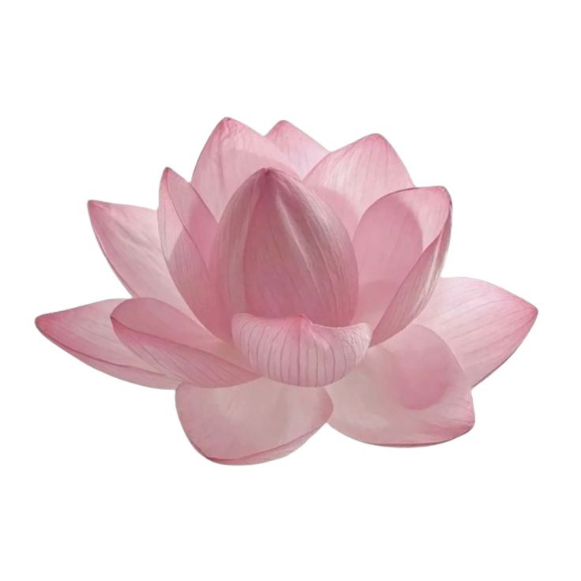
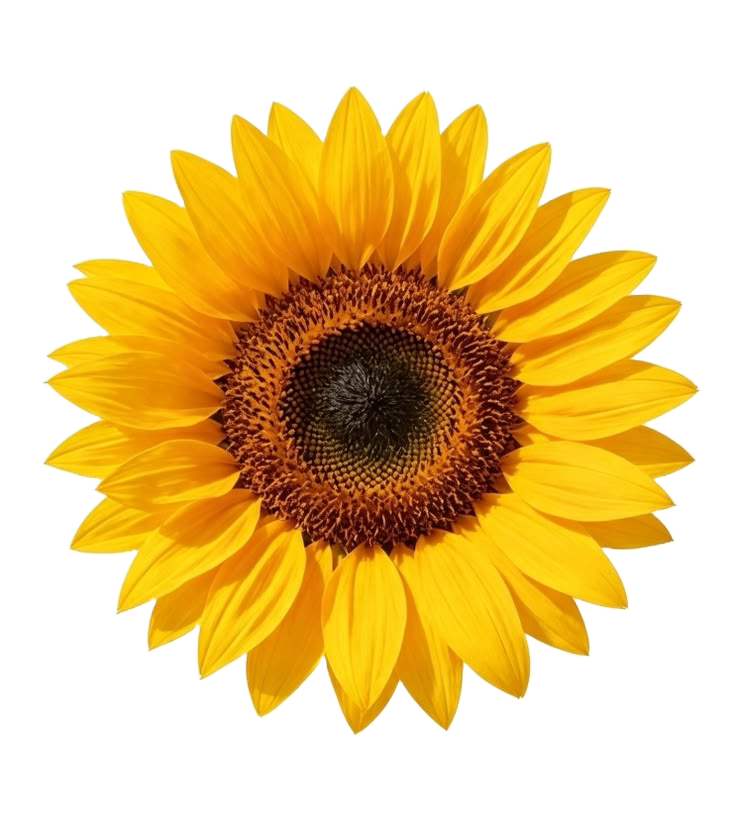
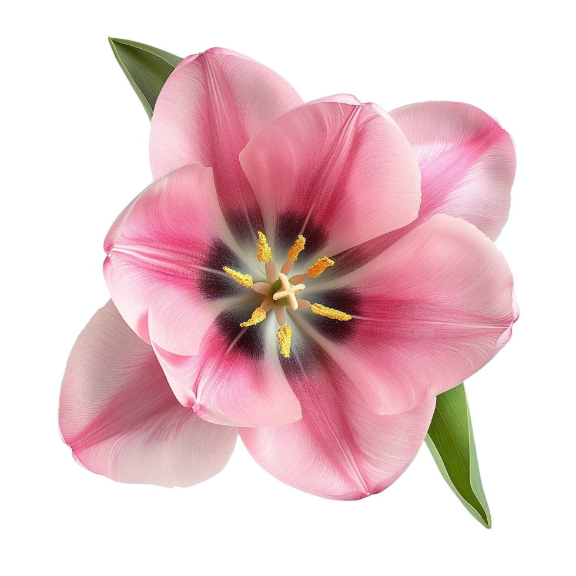
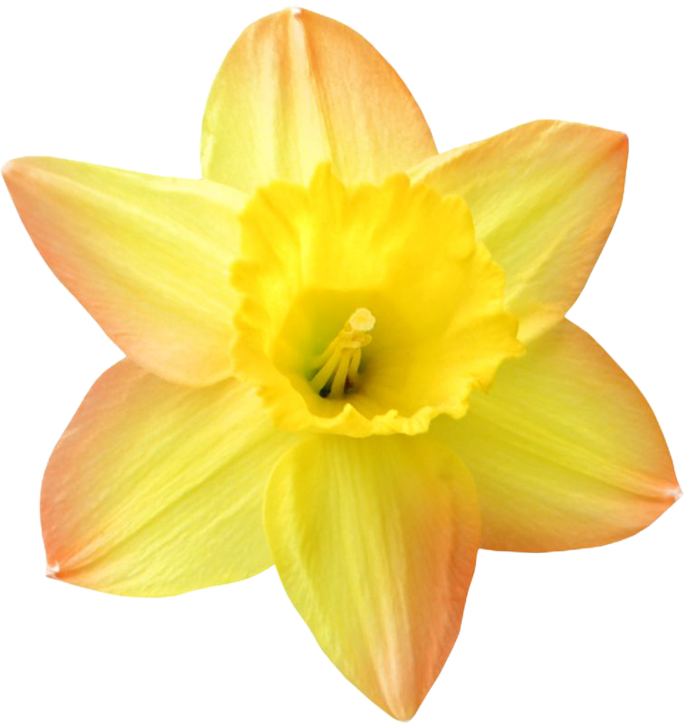

Flower Types

Lotus
The lotus is a flowering plant that grows in shallow water and is native to Asia.

Sunflower
The sunflower is a tall annual plant that is native to North America.

Tulip
The tulip is a bulbous plant that is native to the mountainous regions of Central Asia.

Daffodil
The daffodil is a flowering plant that is native to Europe and Asia.